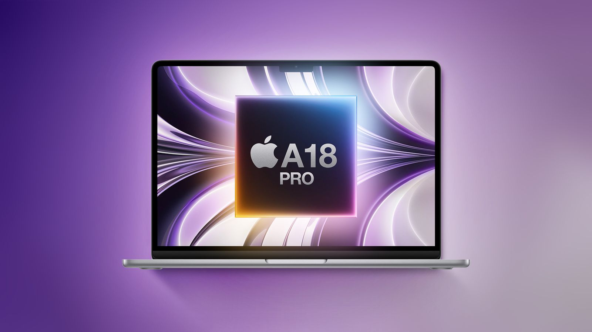

Hot New Rumors and Items
With apple coming out with some brand new products very soon, let's take some time to look into them some of the big advancements, and some that spark a lot of thought.
New Apple TV 4k

The Apple TV 4k 2nd generation was released back in October of 2022. Equipped with the A15 bionic chip, used in the Iphone 13 and 14, it was a major break through for 4k 60Hz streaming that provided low a latency experience. With newere chips and much more demanding TV's that are more easily accessible, there is a call for Apple to release a brand new rendition of the product. Coming this 2026, with an initial delay in November 2025, apple is hinting towards a relase of an Apple TV that uses the newer A17 pro chip seen in the Iphone 15 Pro models. This could lead to a TV streaming device capable fo 4k 120 Hz, thus leading Apple to potentially make a step in the gaming world.left-column
New M5 Macbook Air?

Apple has just recently relased the brand new M5 macbook pros. The new macbook pros come equipped with the standard m5 chip as the pro and max chips have yet to be released. With a higher ratio of GPU cores, apple has shown about 20-30% on gains with recent benchmark testing for rendering. With a lot of talk around the new macbook pros, we lose sight on its super affordable companion. The macbook air and its chamber cooling, allows itself to be what even the Macbook Pro simply can't be! Uber-Light weight and more affordable. The already fantastic Macbook Airs are set for their change in the coming 2026 calendar year.
Sound Will Also Get an Update!

New screen capabilities and high refresh rates aren't just the only thing changing aroudn here! For apple specific audiophiles: a new way to hear music for a low price will still be possible and even an elevation from last generations homepod mini 2. Although the new chip being unknown, we can confirm that apple intelligence will most likely not make its way into this device as the chip and ram requirements would exceed this products goals of price and size. The experience will at least take a boost with a guarantee in a better chip replacing the current S5 in the Home Pod Mini 1st generation.
Return of the Budget friendly Macbook?
The Macbook Air has stuck around as the staple for affordable Macbooks, as stated above. However, a major outcry for newer much cheaper Macbooks has been prevelant,as even with the Macbook Air being affordable, it still can come with a high ticket price of aorund $1000-$1200. Which has prompted rumors of a potential A18 pro based macbook, to take down price, but still excel in power to weight performance. If we see an introduction such as this one, a major step to Apples market may be made resulting from potential switches to apples platform. One of the key factors that holds people back from the switch isn't just integration, but also the price. This could make on of the most important pieces to an Apple based product easily attainable.